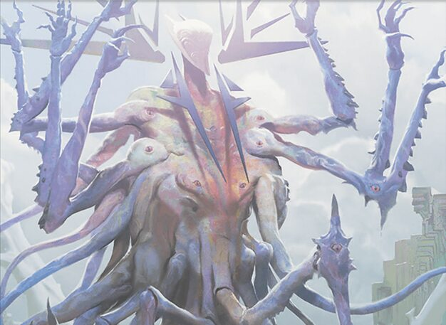

Yuriko, the Tiger's Shadow
Solides Mittelfeld
Das Deck gewinnt 19 % seiner Partien – der Schnitt am Vierertisch liegt bei 25 %.
- Stufe · Elo
- B 1425 Platz 44 von 64 in der Rangliste bis 100 €
- Siegquote
- 19 % 95 Siege in 503 Partien, mit 90 % Sicherheit zwischen 16 und 22 %
- Platzierungen
- 132 %13×
- 215 %6×
- 328 %11×
- 425 %10×
Dort ein neues Deck anlegen und die Liste beim Import einfügen.
- Preis
- 99,76 €von 100,00 €
- Partien
- 521in 52 Turnieren, 18 am Zeitlimit nicht gewertet
- Karten
- 10032 Länder, davon 16 Standard
- Game Changer
- 1höchstens 3 erlaubt
- Kombos
- 0komplett im Deck
- Regelcheck
- Bestanden100 Karten, Farben, Bannliste
Höchstens 100 € inklusive Commander. Steigen die Preise darüber, wird die Kaufliste automatisch neu gebaut.
Stärken und Schwächen
Aus 493 ausgewerteten Partien in 51 Turnieren (mit den Listen, die im Turnier gespielt wurden). Partien am Zeitlimit zählen wie in der Rangliste nicht. Werte in Klammern: Schnitt aller Decks derselben Preisklasse. Die genauen Zahlen siehst du, wenn du mit der Maus auf einen Punkt zeigst oder ihn antippst.
Spielweise: gewinnt über den Kampf – 99 % des Schadens an Gegnern ist Kampfschaden · So gewinnt es: 61 % der Siege durch Überleben – die Gegner schalteten sich gegenseitig aus (Schnitt aller Decks: 31 %)
Stärken
- Kommt mit Angriffen gut durch deutlich11 % der Angreifer geblockt (Schnitt aller Decks: 19 %) · 4702 Angreifer in 450 Partien
- Nutzt sein Mana gut deutlichNur 20 % der Länder blieben in einem Zug ungenutzt (Schnitt aller Decks: 26 %) – das Deck hat fast immer etwas zu spielen · gemessen in den eigenen Zügen 3–8, 191 Partien
Schwächen
- Wenig Druck deutlichnur Ø 19 Schaden an Gegnern je Partie (Schnitt aller Decks: 31) · 493 Partien
- Schaltet selten Gegner aus deutlichim Schnitt 0,38 je Partie (Schnitt aller Decks: 0,63) · 493 Partien
Gegen wen es gewinnt
Siegquote an Tischen, an denen dieser Commander mitspielte – nur Gegner aus der aktuellen Rangliste mit mindestens 20 gemeinsamen Partien. Am Vierertisch liegt der Schnitt bei 25 %.
Gewinnt oft gegen
 37 %von 35
37 %von 35 37 %von 27
37 %von 27 36 %von 22
36 %von 22
Tut sich schwer gegen

0 %von 23 5 %von 21
5 %von 21 5 %von 20
5 %von 20
Spielstil
NinjutsuNinjasAggro
Anzahl Karten je Aufgabe – Ø ist der Schnitt unserer Ranglisten-Decks (Strich im Balken). Der Reiter „Aufbau“ vergleicht stattdessen mit dem EDHREC-Durchschnittsdeck dieses Commanders.
Mit einem anderen Commander vergleichen
Commander (1)
Kreaturen (43)
- Fallen Shinobi5,15 €
- Mist-Syndicate Naga2,76 €
- Higure, the Still Wind2,63 €
- Silent-Blade Oni2,01 €
- Nashi, Moon Sage's Scion1,90 €
- Thousand-Faced Shadow1,52 €
- Boggart Trawler // Boggart Bog1,48 €
- Hydroelectric Specimen // Hydroelectric Laboratory1,11 €
- Ninja of the Deep Hours Kartenziehen1,08 €
- Ingenious Infiltrator KartenziehenKI schwach1,05 €
- Throat Slitter Interaktion1,01 €
- Satoru, the Infiltrator Kartenziehen0,93 €
- Changeling Outcast0,76 €
- Mistblade Shinobi Interaktion0,68 €
- Shadow of Mortality0,66 €
- Faerie Seer0,55 €
- Mothdust Changeling0,50 €
- Siren Stormtamer Interaktion0,50 €
- Satoru Umezawa0,47 €
- Slither Blade0,33 €
- Mist-Cloaked Herald0,31 €
- Biting-Palm Ninja0,28 €
- Tormented Soul0,28 €
- Triton Shorestalker0,27 €
- Dimir Infiltrator0,26 €
- Gingerbrute0,25 €
- Silver-Fur Master0,24 €
- Ingenious Prodigy Kartenziehen0,23 €
- Moonblade Shinobi0,23 €
- Moon-Circuit Hacker Kartenziehen0,22 €
- Street Wraith Kartenziehen0,22 €
- Prosperous Thief Ramp0,21 €
- Ornithopter0,20 €
- Universal Automaton0,20 €
- Skullsnatcher0,17 €
- Splinter, Hamato Yoshi0,16 €
- Yuriko, Hope from the Shadows Interaktion0,16 €
- Wingcrafter0,13 €
- Azra Smokeshaper Schutz0,10 €
- Dokuchi Silencer Interaktion0,10 €
- Tetsuko Umezawa, Fugitive0,08 €
- Moonsnare Specialist0,06 €
- Spectral Sailor Kartenziehen0,06 €
Spontanzauber (14)
- Mystical TutorGame ChangerKI schwach11,27 €
- Flare of Denial Interaktion3,85 €
- Flusterstorm D Interaktion3,84 €
- Lim-Dûl's VaultKI kann nicht3,69 €
- An Offer You Can't Refuse B Interaktion3,42 €
- Dismember Interaktion2,55 €
- CommandeerKI kann nicht1,84 €
- Dark Ritual A1,66 €
- Counterspell B Interaktion1,11 €
- Brainstorm D Kartenziehen0,84 €
- ContagionKI kann nicht0,68 €
- Dig Through Time0,21 €
- Consign // Oblivion Interaktion0,13 €
- Negate B Interaktion0,05 €
Hexereien (3)
- Temporal Trespass3,81 €
- Ponder1,76 €
- Treasure Cruise Kartenziehen0,14 €
Artefakte (4)
- Sol Ring B Ramp0,75 €
- Talisman of Dominance B Ramp0,51 €
- Dimir Signet Ramp0,41 €
- Arcane Signet B Ramp0,37 €
Verzauberungen (3)
- Mystic Remora C KartenziehenKI schwach9,52 €
- Aqueous Form0,38 €
- Smoke Shroud0,22 €
Länder (32)
- Watery Grave7,64 €
- Reliquary Tower1,53 €
- Underground River0,76 €
- Drowned Catacomb0,57 €
- Access Tunnel0,54 €
- Rogue's Passage0,25 €
- Secluded Courtyard0,24 €
- Choked Estuary0,23 €
- Sunken Hollow0,23 €
- Darkwater Catacombs0,22 €
- Exotic Orchard0,20 €
- Command Tower0,16 €
- Temple of Deceit0,16 €
- Turtle Lair0,14 €
- Path of Ancestry0,12 €
- Evolving Wilds0,04 €
- 6× Swamp
- 10× Island
Upgrade auf bis 200 €
Du hast dieses Deck bis 100 €? Das getestete Deck bis 200 € spielt diese Karten anders – oben die, mit denen es am häufigsten gewinnt.
12 Karten anders · +98,73 € · Platz 44 → Platz 37
- Fell the Profane // Fell Mire +15 % Siege, wenn gespielt4,02 €
- Mockingbird +8 % Siege, wenn gespielt4,28 €
- Flare of Malice +7 % Siege, wenn gespielt3,26 €
- Lotus Petal +4 % Siege, wenn gespielt24,22 €
- Snuff Out7,63 €
- Kaito, Bane of Nightmares11,77 €
- Sakashima's Student22,00 €
- Morphic Pool10,01 €
- Mindbreak Trap6,26 €
- Mental Misstep6,22 €
- Shipwreck Marsh1,67 €
- Preordain1,04 €
Dafür raus (12)
Aqueous Form, Azra Smokeshaper, Biting-Palm Ninja, Consign // Oblivion, Contagion, Darkwater Catacombs, Dimir Infiltrator, Dimir Signet, Moonblade Shinobi, Secluded Courtyard, Siren Stormtamer, Street Wraith
Starthand ziehen
Sieben zufällige Karten aus diesem Deck – so siehst du, wie sich der Start anfühlt. Der Commander liegt wie im Spiel nicht im Stapel.
Für die Forge-KI angepasst
Die Liste oben ist die beste getestete Fassung, so wie du sie in echten Partien spielen würdest. Ein paar Karten kann die Forge-KI nicht spielen – sie wurden im Turnier durch andere ersetzt (dabei baut der Deckbauer im Budget auch andere Plätze um). Die Siegquote stammt aus Partien mit diesen Ersatzkarten; die Originalkarten selbst sind nicht von der KI getestet.
- Access Tunnel: Ausgleich für eine andere ersetzte Karte
- Aqueous Form: für einen Test getauscht
- Commandeer: KI kann sie nicht spielen
- Contagion: KI kann sie nicht spielen
- Dimir Signet: Ausgleich für eine andere ersetzte Karte
- Lim-Dûl's Vault: KI kann sie nicht spielen
- Mystic Remora: KI spielt sie eingeschränkt
- Secluded Courtyard: Ausgleich für eine andere ersetzte Karte
- Fourth Bridge Prowler: Ersatz
- Halimar Depths: Ersatz
- Kaito, Bane of Nightmares: Ersatz
- Memnite: Ersatz
- Mukotai Ambusher: Test
- Phantom Ninja: Ersatz
- Preordain: Ersatz
- Shipwreck Marsh: Ersatz
Die Partien in Zahlen
- Commander gewirkt
- 100 %der Partien, in 26 % bis zum 4. Zug
- Schaden je Partie
- 19Schnitt: 31
- Siege im Schnitt
- Zug 12,5eigener Zug, Schnitt: 12,2
- Als Erstes ausgeschieden
- 25 %124 von 493 Partien, Schnitt: 25 %
- Zu wenig Länder
- 9 %der Partien, davon 4 gewonnen, Schnitt: 9 %
- Mulligans
- 12 %60 in 493 Partien, Schnitt: 7 %
Karten mit messbarem Einfluss
Ein Zusammenhang, kein Beweis: Diese Karten kamen in Siegen deutlich öfter ins Spiel.
- Wingcrafter – gewonnen in 31 % der Partien, in denen sie gewirkt wurde (109), sonst 15 %
- Dismember – gewonnen in 29 % der Partien, in denen sie gewirkt wurde (121), sonst 16 %
- Consign – gewonnen in 29 % der Partien, in denen sie gewirkt wurde (110), sonst 16 %
Was die Partien zeigen
Aus 493 ausgewerteten Partien in 51 Turnieren (mit den Listen, die im Turnier gespielt wurden). Partien am Zeitlimit zählen wie in der Rangliste nicht. Werte in Klammern: Schnitt aller Decks derselben Preisklasse. „deutlich“: klar belegt. „Tendenz“: zeichnet sich ab, ist aber noch nicht sicher.
Forge-KI-Hinweis: Dieses Deck gewinnt auffällig oft, indem es überlebt. Die Forge-KI greift Spieler mit viel Leben selten an und entfernt Siegkarten kaum – am echten Tisch, wo Menschen das Deck früher angreifen, ist es vermutlich schwächer als hier gemessen. Mehr dazu
Schaden pro Partie alle Partien
Schaden an Gegnern pro Partie, gerechnet über alle 493 Partien – was die Karte insgesamt beiträgt
- Yuriko, the Tiger's Shadow Ø 2,0traf in 369 von 493 Partien
- Silent-Blade Oni Ø 1,5traf in 75 von 493 Partien
- Fallen Shinobi Ø 1,3traf in 78 von 493 Partien
Schaden bei Einsatz wenn sie trifft
Gesamtschaden ÷ Partien, in denen die Karte Schaden gemacht hat – ihre Stärke im Einsatz
- Silent-Blade Oni Ø 10,0traf in 75 von 493 Partien
- Shadow of Mortality Ø 8,8traf in 22 von 493 Partien
- Fallen Shinobi Ø 8,2traf in 78 von 493 Partien
Top-Finisher schaltet Gegner aus
Karten, die am häufigsten einen gegnerischen Commander aus der Partie genommen haben
- Silent-Blade Oni 39×493 Partien im Deck
- Yuriko, the Tiger's Shadow 13×493 Partien im Deck
- Fallen Shinobi 12×493 Partien im Deck
Beste Interaktion räumt auf
Gegnerkarten, die beim Auflösen dieser Karte zerstört, verbannt, zurückgeschickt oder neutralisiert wurden (ohne Spielsteine)
- Flare of Malice 76×Ø 0,5 pro Partie · 159 Partien im Deck
- An Offer You Can't Refuse 67×Ø 0,1 pro Partie · 493 Partien im Deck
- Counterspell 62×Ø 0,1 pro Partie · 493 Partien im Deck
Größte Hindernisse blockt am meisten
Gegnerische Karten, die die Angreifer dieses Decks am häufigsten geblockt haben – insgesamt 11 % der 4702 Angreifer geblockt, davon 12 % durch Flieger oder Reichweite
- Soldier Token 15×blockte in 8 Partien
- Squirrel Token 11×blockte in 5 Partien
- Flubs, the Fool 9×blockte in 8 Partien
Selten gewirkt Kandidaten zum Tauschen
Karten dieser Liste, die in ihren Partien am seltensten gewirkt wurden – oft zu teuer oder zu langsam (Länder ausgenommen)
- Flusterstorm 5 %gewirkt in 27 von 493 Partien
- Dark Ritual 7 %gewirkt in 36 von 493 Partien
- Dig Through Time 8 %gewirkt in 37 von 493 Partien
Siege nach Zug Tempo
In welchem eigenen Zug die 93 Siege kamen
- bis Zug 73 %
- Zug 8–910 %
- Zug 10–1123 %
- Zug 12–1334 %
- ab Zug 1430 %
Elo-Verlauf
Elo nach jedem Turnier, älteste links. Gestrichelt: Stufengrenzen S, A, B, C.
Jetzt 1425, am höchsten 1503 (21.10.), am niedrigsten 1381 – aus 52 Turnieren.
Letzte Partien
Platz in jeder Partie zu viert, älteste links: Gold = Sieg, Silber = 2, Bronze = 3, rot = 4, Ring = Remis.
4334124431111334234133124214114321211433In den letzten 40 Partien 13× Sieg, 6× Platz 2, 11× Platz 3 und 10× Platz 4.
Manakurve ohne Länder
Durchschnitt 2,87
Aufgaben im Deck
Anzahl / Richtwert aus dem EDHREC-Durchschnittsdeck (der Strich), rot heißt deutlich darunter. Strategie: die übrigen Karten ohne eine dieser Aufgaben, etwa die Kreaturen und Effekte, um die sich das Deck dreht. Zusammen 67 Karten ohne Länder.
Kartentypen
- Kreaturen43
- Spontanzauber14
- Hexereien3
- Artefakte4
- Verzauberungen3
- Länder32
Teuerste Karten
Was das Programm gelernt hat
In jedem Turnier testet das Deck eine Karte. Ein Urteil gibt es erst ab 40 Partien mit und ohne die Karte. Weil das Deck jedes Turnier mit aktuellen Preisen und Daten neu gebaut wird, können getestete Karten später wieder herausfallen.
- besser Biting-Palm Ninja statt Mukotai Ambusher · Siegquote 21 % mit, 11 % ohne (395 / 108 Partien)
- schlechter Nezumi Prowler statt Biting-Palm Ninja · Siegquote 15 % mit, 22 % ohne (227 / 276 Partien)
- kein klarer Unterschied Mukotai Ambusher statt Aqueous Form · Siegquote 19 % mit, 22 % ohne (453 / 50 Partien)
- kein klarer Unterschied Phantom Ninja statt Walker of Secret Ways · Siegquote 21 % mit, 18 % ohne (180 / 323 Partien) · aus einer früheren Fassung, heute nicht im Deck
4 weitere getestete Karten sammeln noch Partien.
Kaufliste für Cardmarket
Liste kopieren, auf Cardmarket unter „Wants“ eine neue Liste anlegen und einfügen.
Zusammen 99,76 € Cardmarket-Durchschnitt vom 27.11.2026
Cardmarket Wants öffnenPreise ohne Versand. Einzelne Karten können bei Cardmarket inzwischen teurer oder günstiger sein.
Gespielt von der Forge-KI, zu viert. Ein durchschnittliches Deck gewinnt 25 %. Wie wird getestet?